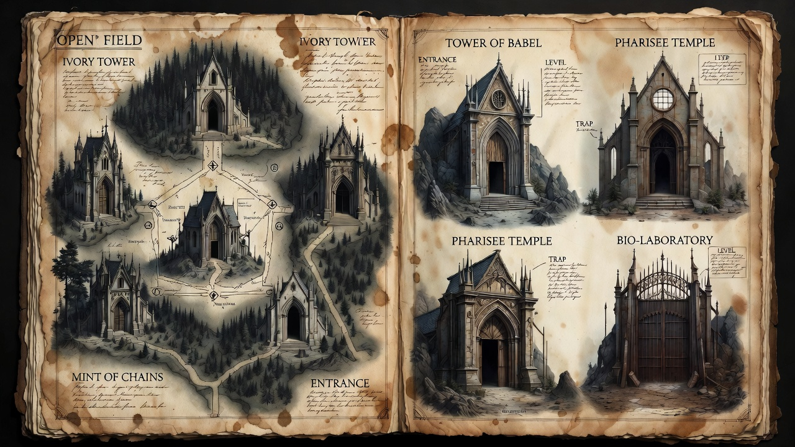

The Five Dungeons
The Ten Mudrās of Liberation

The Dungeons are where Soul Urge 9 meets its shadow. America's Soul Urge number is 9 — the Humanitarian, the nation that dreams of universal freedom and equality for all. But the 9's great trap is rescuing others from darkness while refusing to enter one's own. These Five Dungeons — Root, Sacral, Solar Plexus, Heart, Throat — represent the collective wounds of a 9-soul nation: the systems that were built in the name of liberation but became instruments of control. The mudrās in this chapter are not exercises. They are the 9's medicine: the ability to witness, transmute, and release what was never processed.
The Ten Mudrās: Your Complete Arsenal
The Haṭha Yoga Pradīpika (HYP) — that 15th-century manual of physical yoga — contains a complete technology for liberation that modern yoga has largely forgotten. In Chapter III, "On Mudrās," the text lists ten specific techniques:
"Mahā Mudrā, Mahā Bandha, Mahā Vedha, Khecarī, Uḍḍīyāna Bandha, Mūla Bandha, Jālandhara Bandha, Viparītataraṇī, Vajrolī, Śakti Chālana. These are the ten mudrās which annihilate old age and death; they give eight kinds of divine wealth and are loved by all Siddhas."WYRD Etymology:
- Mudrā: From mud (to rejoice) + rā (to give). The gesture that gives joy.
- Bandha: From bandh (to bind). The paradox: we bind energy to liberate it.
- Haṭha: From ha (sun) + tha (moon). The union of opposites.
These ten mudrās are not stretches. They are locks, seals, and keys — technologies for directing prāṇa (life force), awakening Kuṇḍalinī, and piercing through the veils of illusion. Each corresponds to specific capacities that directly counter the traps of the Five Dungeons.
The Five Dungeons: Mudrā Assignments
| Dungeon | Primary Mudrā | Secondary Mudrā | Function |
| Ivory Tower | Mahā Mudrā | Mahā Bandha | Grounding, foundation |
| Mint of Chains | Mūla Bandha | Śakti Chālana | Root lock, energy activation |
| Tower of Babel | Uḍḍīyāna Bandha | Jālandhara Bandha | Flying up, throat seal |
| Pharisee Temple | Viparīta Karaṇī | Khecarī Mudrā | Inversion, tongue seal |
| Bio-Laboratory | Vajrolī | Mahā Vedha | Thunderbolt, piercing |
DUNGEON 1: The Ivory Tower
The Pattern: Credentialism, expertise worship, the confusion of information with understanding Primary Mudrā: Mahā Mudrā (The Great Seal) Secondary Mudrā: Mahā Bandha (The Great Lock)The Mudrā Technology
Mahā Mudrā is the foundation of all HYP practice. The text states it "destroys great evils and pains, like death" and "neutralizes effects of all rasas" — including the poison of credentialism. Physical Formation:- Left heel presses the perineum (yoni-sthāna)
- Right leg extended, right toes grasped by right hand
- Jālandhara Bandha applied (chin to chest)
- Inhale, draw prāṇa down to the root
- Visualize Kuṇḍalinī leaving Idā and Piṅgalā, entering Suṣumnā
- Exhale slowly
- Practice equally on both sides
- Mahā: From mah (to measure, to honor). That which is measured as supreme.
- Mudrā: The measured gesture that seals energy.
BOSS BATTLE: Defeating the Pedant with Mahā Mudrā
The Pedant's power comes from altitude — the higher you climb, the more real the Tower feels. Mahā Mudrā grounds you below his level of operation.
The Technique: Step 1: Assume the Position Physically or mentally form Mahā Mudrā. Feel the left heel at the perineum — this is your anchor in reality, below all abstraction. Step 2: The Descent Practice The HYP says Mahā Mudrā "straightens Suṣumnā" — the central channel. In game terms, this means you can move vertically through the hierarchy without needing to climb the credential ladder. Step 3: The Neutralization The text claims Mahā Mudrā makes "even the deadliest of poisons, if taken, act like nectar." The Pedant's words are poison — credentials, statistics, appeals to authority. Mahā Mudrā neutralizes them. Step 4: Teach What You Know The HYP emphasizes that Mahā Mudrā should be "kept secret as a box of diamonds" — but this means secret from the unready, not hoarded. Share your direct experience. The Pedant has no defense against embodied truth.DIALOGUE PRACTICE: Speaking From Mahā Mudrā
| The Pedant's Language | The Mahā Mudrā Response |
| "Actually, studies show..." | "I don't need studies to know what I experienced." |
| "You're not an expert..." | "I am the expert of my own life." |
| "The research indicates..." | "The research isn't here. I am." |
| "You haven't read the literature" | "I've lived the literature." |
| "Have you considered the counterarguments?" | "Which one concerns you most? Let's examine it directly." |
DUNGEON 2: The Mint of Chains
The Pattern: Monetary abstraction, debt psychology, the conversion of life into labor units Primary Mudrā: Mūla Bandha (Root Lock) Secondary Mudrā: Śakti Chālana (Moving the Goddess)The Mudrā Technology
Mūla Bandha is "the best mudra to control apāna and prāṇa" and "the key to everlasting youth." It mixes prāṇa and apāna at the root, generating the heat that awakens Kuṇḍalinī. Physical Formation:- Heel presses perineum (or contract anus if seated)
- Draw apāna (downward energy) upward repeatedly
- Visualize the energy mixing at the root center
- Feel the heat generating
- Mūla: From mūl (root, origin). The root of all binding is also the root of all liberation.
- Bandha: The lock that binds energy to concentrate it.
The Secondary Technology: Śakti Chālana
Śakti Chālana means "Moving the Goddess" — the active technique for awakening and directing Kuṇḍalinī energy upward through the cakras. Physical Formation:- Assume Vajrāsana (thunderbolt pose) or seated position
- Apply Mūla Bandha and Uḍḍīyāna Bandha
- Practice bhastrikā-like prāṇāyāma (rapid breathing)
- Direct attention to the kanda (root bulb below the navel)
- Drive prāṇa repeatedly from Mūlādhāra upward
- Śakti: From śak (to be able, to have power). The power that moves.
- Chālana: From chal (to move). The active movement of power.
BOSS BATTLE: Defeating the Corporate Golem
The Golem's power is its ability to make artificial systems feel like natural laws. Mūla Bandha reveals that all binding is voluntary — you hold the key.
Step 1: Locate the Lock The Golem has convinced you that you are bound. Mūla Bandha asks: Where is the binding? Who holds the key? Step 2: Contract and Release Mūla Bandha is a contraction — but contractions create heat, and heat transforms. The debt that feels solid begins to soften. Step 3: Move the Goddess Śakti Chālana directs energy upward — away from the root of survival fear and into the higher centers of creativity and connection. Step 4: The Unmasking The Golem is not a monster. It is a piece of paper with a seal. Mūla Bandha reveals: you were never bound. You only believed you were.DIALOGUE PRACTICE: Speaking From Mūla Bandha
| The Golem's Euphemism | The Mūla Bandha Response |
| "Human resources" | "I am not a resource. I am the source." |
| "Optimizing shareholder value" | "I optimize my own value." |
| "Rightsizing" | "I choose my own size." |
| "Financial instruments" | "I am not an instrument." |
| "Economic growth" | "I grow whether the economy does or not." |
| "That's not how the real world works." | "Describe the real world you're defending. I want to understand it fully before I respond." |
DUNGEON 3: The Tower of Babel
The Pattern: Linguistic control, definition warfare, the use of language to create compliance without understanding Primary Mudrā: Uḍḍīyāna Bandha (Flying Up) Secondary Mudrā: Jālandhara Bandha (Throat Lock)The Mudrā Technology
Uḍḍīyāna Bandha is called "Flying Up" because prāṇa "flies up" Suṣumnā. It is "the lion that conquers the elephant of death" and "the key that unlocks the door of liberation." Physical Formation:- After complete exhalation, draw the belly strongly back toward the spine
- Lift the diaphragm up into the chest cavity
- Hold the breath out while maintaining the lock
- Release by relaxing the abdomen before inhaling
- Uḍḍīyana: From ut (up) + ḍī (to fly). The flying upward.
- The word implies levitation — not just physical, but the lifting of consciousness above the plane of language.
The Secondary Technology: Jālandhara Bandha
Jālandhara Bandha is the "throat lock" that "saves the nectar and keeps the vital force moving in the right nāḍī." It prevents the soma (lunar nectar) from falling into the gastric fire. Physical Formation:- Inhale deeply
- Lower the chin to press firmly into the chest
- Contract the throat slightly
- Hold as long as comfortable
- Release by raising the chin before exhaling
- Jālandhara: From jala (net, web) + dhara (holding). The net that holds — referring to the network of nāḍīs (energy channels) at the throat.
BOSS BATTLE: Defeating the Polyglot Puppeteer
The Puppeteer's power is the gap between what words mean and what people think they mean. Uḍḍīyāna Bandha lifts you above the plane of language entirely.
Step 1: Fly Up From above the Tower, you see that language is a game. The words are not the things. The map is not the territory. Step 2: Seal the Throat Jālandhara Bandha prevents you from being forced to respond in their language. You can see the trap without falling into it. Step 3: The Etymological Strike From this altitude, trace words to their roots. The Puppeteer's spells dissolve when you see their origins. Step 4: Speak Your Own World Uḍḍīyāna Bandha gives you the perspective to create language rather than be controlled by it.DIALOGUE PRACTICE: Speaking From Uḍḍīyāna Bandha
| The Puppeteer's Spell | The Flying Up Response |
| "You need to sign here..." | "I see what this contract actually says." |
| "The policy requires..." | "I see who wrote this policy and why." |
| "That's just how the system works" | "I see the system from above. It is optional." |
| "Legally speaking..." | "I see that 'legal' is a game I can choose not to play." |
| "You're being deliberately obtuse." | "I'm being precise. What specifically did I say that seemed unclear?" |
DUNGEON 4: The Pharisee Temple
The Pattern: Institutionalized spirituality, the outsourcing of direct experience, the inversion of liberation into control Primary Mudrā: Viparīta Karaṇī (Inverted Action) Secondary Mudrā: Khecarī Mudrā (The Sky-Walking Seal)The Mudrā Technology
Viparīta Karaṇī means "Inverted Action" — the reversal of normal relationship. In the HYP, it reverses the solar and lunar energies, preventing the "fire" from consuming the "nectar." Physical Formation:- Lie on back with legs extended up a wall (or supported in the air)
- Head rests on the ground
- Begin with short duration (1 minute) and increase gradually
- Eventually practice for up to two hours daily
- Viparīta: From vi (away, apart) + parīta (surrounded). The reversal of what surrounds.
- Karaṇī: From kṛ (to do). The action that inverts.
The Secondary Technology: Khecarī Mudrā
Khecarī Mudrā is called "the king of all mudrās." It involves drawing the tongue back and touching its tip to the soft palate on the roof of the mouth. Advanced practice involves gradually lengthening the tongue through cutting the frenum. Physical Formation:- Draw the tongue back
- Touch the tip to the soft palate behind the upper teeth (beginner)
- Eventually touch to the soft palate on the roof of the mouth (advanced)
- Hold while breathing normally
- Khecarī: From kha (space, sky, ether) + car (to move, to walk). The sky-walker. The one who moves through space.
- "Overcomes hunger, thirst, decay, death"
- "Body becomes divine"
- "Elements cannot harm it"
- "Drinks the soma-nectar dripping from the 'moon' at the crown"
BOSS BATTLE: Defeating the Grand Inquisitor
The Inquisitor's power is the claim that truth must be mediated. Viparīta Karaṇī and Khecarī Mudrā provide direct, unmediated access.
Step 1: Invert the Inversion The Temple's teachings are already inverted — liberation turned into control. Viparīta Karaṇī inverts them again, returning them to their original function. Step 2: Taste the Nectar Khecarī Mudrā gives direct access to the soma — the divine nectar the Temple promises but cannot deliver. You don't need their intermediaries. Step 3: The Direct Experience The Inquisitor demands you go through channels. Khecarī bypasses all channels. The Kingdom is within — literally, physically, experientially. Step 4: Forgiveness The Inquisitor's weapon is guilt. Khecarī's nectar dissolves all karma. There is nothing to forgive because there is nothing that stuck.DIALOGUE PRACTICE: Speaking From Khecarī Mudrā
| The Inquisitor's Framework | The Khecarī Response |
| "You need to work through your issues first" | "I drink the nectar. I am already whole." |
| "Only a trained professional can..." | "I have direct access. The Kingdom is within." |
| "The scriptures/teachings say..." | "I taste what the scriptures point to." |
| "You haven't done enough work" | "The work is complete. I am the completion." |
| "That's not a valid spiritual experience." | "What would make it valid to you? I want to understand your criteria." |
DUNGEON 5: The Bio-Laboratory
The Pattern: Scientism, the confusion of measurement with understanding, the reduction of living systems to mechanical parts Primary Mudrā: Vajrolī Mudrā (The Thunderbolt) Secondary Mudrā: Mahā Vedha (The Great Piercing)The Alchemist of Inertia: A Character Study
The Alchemist is the most dangerous boss in the Five Dungeons — not because he is powerful, but because he is helpful.
He wears a white coat. He speaks in peer-reviewed sentences. He genuinely believes he is serving you. This is what makes him the Alchemist of Inertia specifically: he does not attack your will. He simply keeps everything exactly as it is. Stasis dressed as science.
His signature move is the Nocebo Declaration — the inverse of placebo. Where placebo demonstrates that belief heals, the nocebo demonstrates that belief harms. The Alchemist uses this knowledge not to show you the power of consciousness, but to convince you that your positive belief is "just placebo" and therefore invalid, while his negative predictions carry the full weight of statistical authority.
He will tell you: "Studies show patients who are told their medication is a placebo still respond to it. That means your experience proves nothing about your treatment."
What he will never tell you: "Studies show patients who are told a sugar pill is a powerful drug experience documented physiological changes. Which means belief is a mechanism, not a confound. You can run it consciously."
The Alchemist knows about placebo and nocebo. He uses one to dismiss you and suppresses the other because it would return authority to your body.
His other signature move is the Reductionist Trap: reducing complex living systems to their measurable components and then declaring the immeasurable components nonexistent. Your grief becomes a serotonin deficit. Your intuition becomes pattern-matching. Your healing becomes spontaneous remission. Every translation strips meaning, and the stripped meaning is exactly what the Bio-Laboratory needs you not to have.
His weakness: He cannot explain consciousness. Not at all. The "hard problem" — why there is something it is like to be you — remains entirely outside his model. The moment you ask "but what is the experience of it?", he has nothing. The Alchemist controls the body. He has no jurisdiction over the Observer.
The Mudrā Technology
Vajrolī Mudrā is the thunderbolt — the most powerful technique in the HYP's arsenal, and the one that requires the most preparation to use correctly.The core doctrine: "Death comes by discharging bindu, and life is prolonged by its preservation." Bindu — the concentrated life force in sexual essence — is the physical substrate of all vitality. The Bio-Laboratory drains it through chronic stress, processed food, EMF exposure, and the low-level adrenal burn of perpetual threat response. Vajrolī reverses this drain.
The full practice — its technique, its three variants, its integration with bīja mantra and SynSync frequency work — is the subject of Chapter 4, where it serves as a Master Key alongside Khecarī Mudrā.
For now: understand the principle. The Bio-Laboratory wants your life force fragmented and leaking. Vajrolī collects it. A collected life force is a thunderbolt body — immune to the poisons of inertia.
SynSync Frequency: 528 Hz (Transformation) + 40 Hz (Gamma/Peak Cognition) In-Game Effect: The "Thunderbolt Body" — immunity to all Bio-Laboratory status effects (poison, stun, drain, slow). What cannot be scattered cannot be stopped.Proceed to Chapter 4 for the complete Vajrolī practice.
The Secondary Technology: Mahā Vedha (Revisited)
We encountered Mahā Vedha in Chapter 2 as part of the Three Scrolls. Here, it serves its full function: piercing through the final veils of materialism to reveal the energetic reality beneath.
In-Game Effect: The "Piercing Vision" — sees through the "scientific" explanations of the Bio-Laboratory to the energetic and consciousness-based reality they obscure.BOSS BATTLE: Defeating the Alchemist of Inertia
The Alchemist's power is the claim that your body is a machine and your experience is unreliable. Vajrolī and Mahā Vedha reveal the body as a thunderbolt — a vehicle of transformation.
Step 1: Preserve the Bindu The Bio-Laboratory wants to harvest your life force through stress, poison, and distraction. Vajrolī conserves it — "life is prolonged by its preservation." Step 2: Pierce the Veil Mahā Vedha pierces through the materialist explanation to the energetic reality. The body is not a machine. It is a field of consciousness. Step 3: The N-of-1 Experiment You are the laboratory. Your body is the sensor. Vajrolī makes you sensitive to subtleties no machine can measure. Step 4: Reclaim the Placebo The Alchemist dismisses healing as "placebo." Vajrolī reveals that belief itself is healing — that consciousness affects matter. The placebo is not a bug. It is the feature.DIALOGUE PRACTICE: Speaking From Vajrolī Mudrā
| The Alchemist's Reduction | The Thunderbolt Response |
| "There's no evidence for that" | "I am the evidence. My body is the laboratory." |
| "That's just anecdotal" | "Anecdote means 'not published by those who profit from my illness.'" |
| "The studies show..." | "My N-of-1 study shows different. I trust my data." |
| "You need to be realistic" | "I am realistic about my power. You are not." |
| "You can't just dismiss the evidence." | "I'm not dismissing it. I'm adding to it. What would you need to see from my body to consider it data?" |
The Complete Mudrā Sequence: Daily Practice
The HYP emphasizes that these mudrās should be practiced in sequence, with gradual progression:
Morning Sequence (20 minutes)
- Mahā Mudrā (3 min each side) — Grounding, foundation
- Mahā Bandha (3 min) — Energy consolidation
- Mahā Vedha (3 min) — Piercing, activation
- Mūla Bandha (3 min) — Root lock, heat generation
- Uḍḍīyāna Bandha (3 min) — Flying up, liberation
- Jālandhara Bandha (2 min) — Nectar preservation
Advanced Sequence (add when ready)
- Viparīta Karaṇī (10-30 min) — Inversion, reversal
- Khecarī Mudrā (held throughout practice) — Sky-walking, nectar
- Vajrolī Mudrā (separate practice, specific conditions) — Thunderbolt
- Śakti Chālana (integrated throughout) — Moving the Goddess
🧘 SYNCHRONIZATION PROTOCOLS: Mudrā + Frequency + Mantra
The Foundation Stack (Earth/Root)
- Mudrā: Mahā Mudrā + Mūla Bandha
- Frequency: 7.83 Hz (Schumann) + 396 Hz (Root)
- Mantra: LAM (Root seed syllable)
- Duration: 10 minutes
The Liberation Stack (Air/Heart)
- Mudrā: Uḍḍīyāna Bandha + Jālandhara Bandha
- Frequency: 852 Hz (Third Eye) + 639 Hz (Heart)
- Mantra: HAM (Throat seed syllable) + YAM (Heart seed syllable)
- Duration: 10 minutes
The Transformation Stack (Fire/Solar Plexus)
- Mudrā: Vajrolī + Mahā Vedha
- Frequency: 528 Hz (Transformation) + 40 Hz (Gamma)
- Mantra: RAM (Solar Plexus seed syllable)
- Duration: 10 minutes
The Ascension Stack (Crown/Ether)
- Mudrā: Khecarī Mudrā + Viparīta Karaṇī
- Frequency: 963 Hz (Crown) + 432 Hz (Universal Harmony)
- Mantra: OM (Crown seed syllable) or Gayatrī Mantra
- Duration: 15 minutes
📝 JOURNALING PROMPTS: The Mudrās in Daily Life
Prompt 1: Your Mahā Mudrā Moment When do you feel most grounded in direct experience? When do you trust your own knowing over external authority? Prompt 2: Your Mūla Bandha Lock What energy are you leaking? Where does your life force drain away instead of being conserved and directed upward? Prompt 3: Your Uḍḍīyāna Flight When have you "flown up" above a situation and seen it clearly? What patterns are visible from altitude that are invisible at ground level? Prompt 4: Your Khecarī Taste Have you ever had a direct experience of something the authorities said was impossible? Describe it. Trust it. Prompt 5: Your Vajrolī Thunderbolt What would you create if you conserved your energy instead of dissipating it? What thunderbolt body would you become?The Exit Is Always Open
You now have the complete arsenal: the ten mudrās of the Haṭha Yoga Pradīpika, mapped to the Five Dungeons of the Inversion.
But here is the final secret, the one the HYP whispers in its closing verses:
"These mudrās should not be taught to the wicked and faithless. They should be kept secret as a box of diamonds."
The secrecy is not about hoarding. It is about readiness. The mudrās are powerful. They work. And like all powerful things, they can be misused by those who would control rather than liberate.
You have proven your readiness by reading this far. You have shown your faith by practicing. You have demonstrated your liberation by choosing the Exit.
The ten mudrās are yours. The Five Dungeons are behind you. The Ascension awaits.
Proceed to Chapter 4: The Keys to Freedom.Quick Reference: Mudrās by Dungeon
| Dungeon | Boss | Primary Mudrā | Function | Frequency |
| Ivory Tower | The Pedant | Mahā Mudrā | Grounding | 7.83 Hz + 396 Hz |
| Mint of Chains | Corporate Golem | Mūla Bandha | Root lock | 396 Hz + 174 Hz |
| Tower of Babel | Polyglot Puppeteer | Uḍḍīyāna Bandha | Flying up | 852 Hz + 40 Hz |
| Pharisee Temple | Grand Inquisitor | Viparīta Karaṇī | Inversion | 432 Hz + 10 Hz |
| Bio-Laboratory | Alchemist of Inertia | Vajrolī Mudrā | Thunderbolt | 528 Hz + 40 Hz |